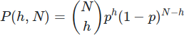

Tenendo conto che la probabilità di incrementare l'altezza di una colonna a una data iterazione è di p=1/L, dove L è la lunghezza in cubetti della linea, quindi appunto uniforme, la probabilità che N colonne abbiano una certa altezza h è ossia una distribuzione binomiale, che tipicamente descrive i fenomeni che dipendono dalla ripetizione di eventi con una certa probabilità fissata.  Torna su